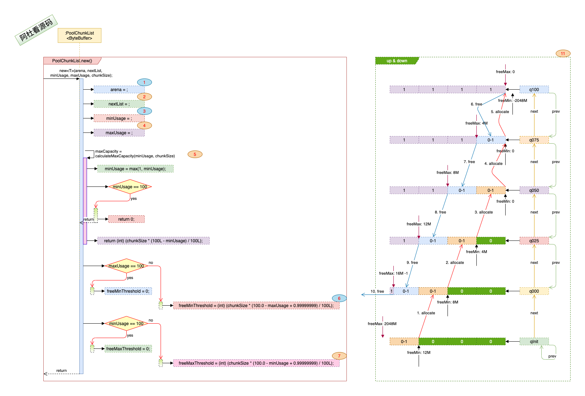
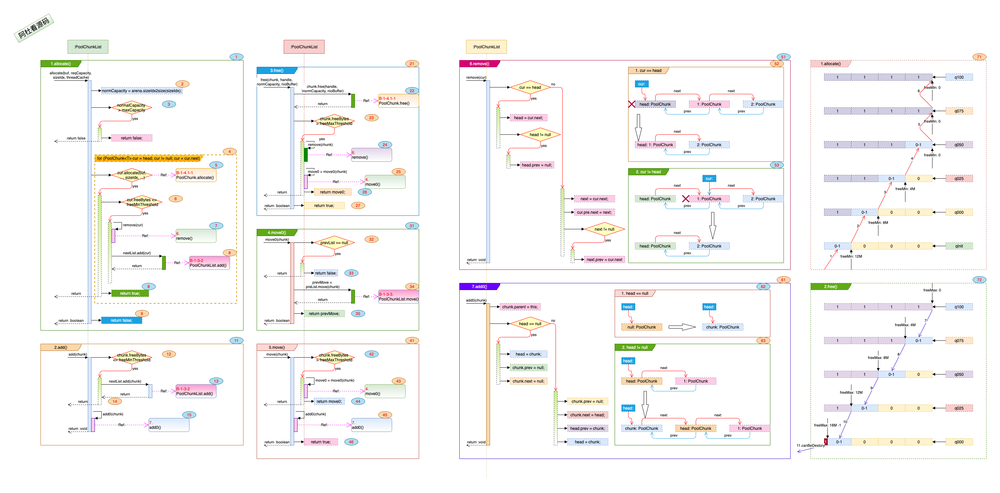

<!doctype html>
<html>
<head>
<meta charset='UTF-8'><meta name='viewport' content='width=device-width initial-scale=1'>

<link href='https://fonts.loli.net/css?family=Open+Sans:400italic,700italic,700,400&subset=latin,latin-ext' rel='stylesheet' type='text/css' /><style type='text/css'>html {overflow-x: initial !important;}:root { --bg-color: #ffffff; --text-color: #333333; --select-text-bg-color: #B5D6FC; --select-text-font-color: auto; --monospace: "Lucida Console",Consolas,"Courier",monospace; --title-bar-height: 20px; }
.mac-os-11 { --title-bar-height: 28px; }
html { font-size: 14px; background-color: var(--bg-color); color: var(--text-color); font-family: "Helvetica Neue", Helvetica, Arial, sans-serif; -webkit-font-smoothing: antialiased; }
body { margin: 0px; padding: 0px; height: auto; bottom: 0px; top: 0px; left: 0px; right: 0px; font-size: 1rem; line-height: 1.42857143; overflow-x: hidden; background-image: inherit; background-size: inherit; background-attachment: inherit; background-origin: inherit; background-clip: inherit; background-color: inherit; tab-size: 4; background-position: inherit inherit; background-repeat: inherit inherit; }
iframe { margin: auto; }
a.url { word-break: break-all; }
a:active, a:hover { outline: 0px; }
.in-text-selection, ::selection { text-shadow: none; background: var(--select-text-bg-color); color: var(--select-text-font-color); }
#write { margin: 0px auto; height: auto; width: inherit; word-break: normal; word-wrap: break-word; position: relative; white-space: normal; overflow-x: visible; padding-top: 36px; }
#write.first-line-indent p { text-indent: 2em; }
#write.first-line-indent li p, #write.first-line-indent p * { text-indent: 0px; }
#write.first-line-indent li { margin-left: 2em; }
.for-image #write { padding-left: 8px; padding-right: 8px; }
body.typora-export { padding-left: 30px; padding-right: 30px; }
.typora-export .footnote-line, .typora-export li, .typora-export p { white-space: pre-wrap; }
.typora-export .task-list-item input { pointer-events: none; }
@media screen and (max-width: 500px) { 
  body.typora-export { padding-left: 0px; padding-right: 0px; }
  #write { padding-left: 20px; padding-right: 20px; }
  .CodeMirror-sizer { margin-left: 0px !important; }
  .CodeMirror-gutters { display: none !important; }
}
#write li > figure:last-child { margin-bottom: 0.5rem; }
#write ol, #write ul { position: relative; }
img { max-width: 100%; vertical-align: middle; image-orientation: from-image; }
button, input, select, textarea { color: inherit; font-family: inherit; font-size: inherit; font-style: inherit; font-variant-caps: inherit; font-weight: inherit; font-stretch: inherit; line-height: inherit; }
input[type="checkbox"], input[type="radio"] { line-height: normal; padding: 0px; }
*, ::after, ::before { box-sizing: border-box; }
#write h1, #write h2, #write h3, #write h4, #write h5, #write h6, #write p, #write pre { width: inherit; }
#write h1, #write h2, #write h3, #write h4, #write h5, #write h6, #write p { position: relative; }
p { line-height: inherit; }
h1, h2, h3, h4, h5, h6 { break-after: avoid-page; break-inside: avoid; orphans: 4; }
p { orphans: 4; }
h1 { font-size: 2rem; }
h2 { font-size: 1.8rem; }
h3 { font-size: 1.6rem; }
h4 { font-size: 1.4rem; }
h5 { font-size: 1.2rem; }
h6 { font-size: 1rem; }
.md-math-block, .md-rawblock, h1, h2, h3, h4, h5, h6, p { margin-top: 1rem; margin-bottom: 1rem; }
.hidden { display: none; }
.md-blockmeta { color: rgb(204, 204, 204); font-weight: 700; font-style: italic; }
a { cursor: pointer; }
sup.md-footnote { padding: 2px 4px; background-color: rgba(238, 238, 238, 0.7); color: rgb(85, 85, 85); border-top-left-radius: 4px; border-top-right-radius: 4px; border-bottom-right-radius: 4px; border-bottom-left-radius: 4px; cursor: pointer; }
sup.md-footnote a, sup.md-footnote a:hover { color: inherit; text-transform: inherit; text-decoration: inherit; }
#write input[type="checkbox"] { cursor: pointer; width: inherit; height: inherit; }
figure { overflow-x: auto; margin: 1.2em 0px; max-width: calc(100% + 16px); padding: 0px; }
figure > table { margin: 0px; }
tr { break-inside: avoid; break-after: auto; }
thead { display: table-header-group; }
table { border-collapse: collapse; border-spacing: 0px; width: 100%; overflow: auto; break-inside: auto; text-align: left; }
table.md-table td { min-width: 32px; }
.CodeMirror-gutters { border-right-width: 0px; background-color: inherit; }
.CodeMirror-linenumber { }
.CodeMirror { text-align: left; }
.CodeMirror-placeholder { opacity: 0.3; }
.CodeMirror pre { padding: 0px 4px; }
.CodeMirror-lines { padding: 0px; }
div.hr:focus { cursor: none; }
#write pre { white-space: pre-wrap; }
#write.fences-no-line-wrapping pre { white-space: pre; }
#write pre.ty-contain-cm { white-space: normal; }
.CodeMirror-gutters { margin-right: 4px; }
.md-fences { font-size: 0.9rem; display: block; break-inside: avoid; text-align: left; overflow: visible; white-space: pre; background-image: inherit; background-size: inherit; background-attachment: inherit; background-origin: inherit; background-clip: inherit; background-color: inherit; position: relative !important; background-position: inherit inherit; background-repeat: inherit inherit; }
.md-fences-adv-panel { width: 100%; margin-top: 10px; text-align: center; padding-top: 0px; padding-bottom: 8px; overflow-x: auto; }
#write .md-fences.mock-cm { white-space: pre-wrap; }
.md-fences.md-fences-with-lineno { padding-left: 0px; }
#write.fences-no-line-wrapping .md-fences.mock-cm { white-space: pre; overflow-x: auto; }
.md-fences.mock-cm.md-fences-with-lineno { padding-left: 8px; }
.CodeMirror-line, twitterwidget { break-inside: avoid; }
.footnotes { opacity: 0.8; font-size: 0.9rem; margin-top: 1em; margin-bottom: 1em; }
.footnotes + .footnotes { margin-top: 0px; }
.md-reset { margin: 0px; padding: 0px; border: 0px; outline: 0px; vertical-align: top; text-decoration: none; text-shadow: none; float: none; position: static; width: auto; height: auto; white-space: nowrap; cursor: inherit; line-height: normal; font-weight: 400; text-align: left; box-sizing: content-box; direction: ltr; background-position: 0px 0px; background-repeat: initial initial; }
li div { padding-top: 0px; }
blockquote { margin: 1rem 0px; }
li .mathjax-block, li p { margin: 0.5rem 0px; }
li blockquote { margin: 1rem 0px; }
li { margin: 0px; position: relative; }
blockquote > :last-child { margin-bottom: 0px; }
blockquote > :first-child, li > :first-child { margin-top: 0px; }
.footnotes-area { color: rgb(136, 136, 136); margin-top: 0.714rem; padding-bottom: 0.143rem; white-space: normal; }
#write .footnote-line { white-space: pre-wrap; }
@media print { 
  body, html { border: 1px solid transparent; height: 99%; break-after: avoid; break-before: avoid; font-variant-ligatures: no-common-ligatures; }
  #write { margin-top: 0px; padding-top: 0px; border-color: transparent !important; }
  .typora-export * { -webkit-print-color-adjust: exact; }
  .typora-export #write { break-after: avoid; }
  .typora-export #write::after { height: 0px; }
  .is-mac table { break-inside: avoid; }
  .typora-export-show-outline .typora-export-sidebar { display: none; }
}
.footnote-line { margin-top: 0.714em; font-size: 0.7em; }
a img, img a { cursor: pointer; }
pre.md-meta-block { font-size: 0.8rem; min-height: 0.8rem; white-space: pre-wrap; background-color: rgb(204, 204, 204); display: block; overflow-x: hidden; background-position: initial initial; background-repeat: initial initial; }
p > .md-image:only-child:not(.md-img-error) img, p > img:only-child { display: block; margin: auto; }
#write.first-line-indent p > .md-image:only-child:not(.md-img-error) img { left: -2em; position: relative; }
p > .md-image:only-child { display: inline-block; width: 100%; }
#write .MathJax_Display { margin: 0.8em 0px 0px; }
.md-math-block { width: 100%; }
.md-math-block:not(:empty)::after { display: none; }
.MathJax_ref { fill: currentcolor; }
[contenteditable="true"]:active, [contenteditable="true"]:focus, [contenteditable="false"]:active, [contenteditable="false"]:focus { outline: 0px; box-shadow: none; }
.md-task-list-item { position: relative; list-style-type: none; }
.task-list-item.md-task-list-item { padding-left: 0px; }
.md-task-list-item > input { position: absolute; top: 0px; left: 0px; margin-left: -1.2em; margin-top: calc(1em - 10px); border: none; }
.math { font-size: 1rem; }
.md-toc { min-height: 3.58rem; position: relative; font-size: 0.9rem; border-top-left-radius: 10px; border-top-right-radius: 10px; border-bottom-right-radius: 10px; border-bottom-left-radius: 10px; }
.md-toc-content { position: relative; margin-left: 0px; }
.md-toc-content::after, .md-toc::after { display: none; }
.md-toc-item { display: block; color: rgb(65, 131, 196); }
.md-toc-item a { text-decoration: none; }
.md-toc-inner:hover { text-decoration: underline; }
.md-toc-inner { display: inline-block; cursor: pointer; }
.md-toc-h1 .md-toc-inner { margin-left: 0px; font-weight: 700; }
.md-toc-h2 .md-toc-inner { margin-left: 2em; }
.md-toc-h3 .md-toc-inner { margin-left: 4em; }
.md-toc-h4 .md-toc-inner { margin-left: 6em; }
.md-toc-h5 .md-toc-inner { margin-left: 8em; }
.md-toc-h6 .md-toc-inner { margin-left: 10em; }
@media screen and (max-width: 48em) { 
  .md-toc-h3 .md-toc-inner { margin-left: 3.5em; }
  .md-toc-h4 .md-toc-inner { margin-left: 5em; }
  .md-toc-h5 .md-toc-inner { margin-left: 6.5em; }
  .md-toc-h6 .md-toc-inner { margin-left: 8em; }
}
a.md-toc-inner { font-size: inherit; font-style: inherit; font-weight: inherit; line-height: inherit; }
.footnote-line a:not(.reversefootnote) { color: inherit; }
.md-attr { display: none; }
.md-fn-count::after { content: "."; }
code, pre, samp, tt { font-family: var(--monospace); }
kbd { margin: 0px 0.1em; padding: 0.1em 0.6em; font-size: 0.8em; color: rgb(36, 39, 41); background-color: rgb(255, 255, 255); border: 1px solid rgb(173, 179, 185); border-top-left-radius: 3px; border-top-right-radius: 3px; border-bottom-right-radius: 3px; border-bottom-left-radius: 3px; box-shadow: rgba(12, 13, 14, 0.2) 0px 1px 0px, rgb(255, 255, 255) 0px 0px 0px 2px inset; white-space: nowrap; vertical-align: middle; background-position: initial initial; background-repeat: initial initial; }
.md-comment { color: rgb(162, 127, 3); opacity: 0.8; font-family: var(--monospace); }
code { text-align: left; }
a.md-print-anchor { white-space: pre !important; border: none !important; display: inline-block !important; position: absolute !important; width: 1px !important; right: 0px !important; outline: 0px !important; text-shadow: initial !important; background-position: 0px 0px !important; background-repeat: initial initial !important; }
.md-inline-math .MathJax_SVG .noError { display: none !important; }
.html-for-mac .inline-math-svg .MathJax_SVG { vertical-align: 0.2px; }
.md-fences-math .MathJax_SVG_Display, .md-math-block .MathJax_SVG_Display { text-align: center; margin: 0px; position: relative; text-indent: 0px; max-width: none; max-height: none; min-height: 0px; min-width: 100%; width: auto; overflow-y: visible; display: block !important; }
.MathJax_SVG_Display, .md-inline-math .MathJax_SVG_Display { width: auto; margin: inherit; display: inline-block !important; }
.MathJax_SVG .MJX-monospace { font-family: var(--monospace); }
.MathJax_SVG .MJX-sans-serif { font-family: sans-serif; }
.MathJax_SVG { display: inline; font-style: normal; font-weight: 400; line-height: normal; text-indent: 0px; text-align: left; text-transform: none; letter-spacing: normal; word-spacing: normal; word-wrap: normal; white-space: nowrap; float: none; direction: ltr; max-width: none; max-height: none; min-width: 0px; min-height: 0px; border: 0px; padding: 0px; margin: 0px; zoom: 90%; }
#math-inline-preview-content { zoom: 1.1; }
.MathJax_SVG * { transition: none; }
.MathJax_SVG_Display svg { vertical-align: middle !important; margin-bottom: 0px !important; margin-top: 0px !important; }
.os-windows.monocolor-emoji .md-emoji { font-family: "Segoe UI Symbol", sans-serif; }
.md-diagram-panel > svg { max-width: 100%; }
[lang="flow"] svg, [lang="mermaid"] svg { max-width: 100%; height: auto; }
[lang="mermaid"] .node text { font-size: 1rem; }
table tr th { border-bottom-width: 0px; }
video { max-width: 100%; display: block; margin: 0px auto; }
iframe { max-width: 100%; width: 100%; border: none; }
.highlight td, .highlight tr { border: 0px; }
mark { background-color: rgb(255, 255, 0); color: rgb(0, 0, 0); background-position: initial initial; background-repeat: initial initial; }
.md-html-inline .md-plain, .md-html-inline strong, mark .md-inline-math, mark strong { color: inherit; }
.md-expand mark .md-meta { opacity: 0.3 !important; }
mark .md-meta { color: rgb(0, 0, 0); }
@media print { 
  .typora-export h1, .typora-export h2, .typora-export h3, .typora-export h4, .typora-export h5, .typora-export h6 { break-inside: avoid; }
}
.md-diagram-panel .messageText { stroke: none !important; }
.md-diagram-panel .start-state { fill: var(--node-fill); }
.md-diagram-panel .edgeLabel rect { opacity: 1 !important; }
.md-require-zoom-fix foreignObject { font-size: var(--mermaid-font-zoom); }
.md-fences.md-fences-math { font-size: 1em; }
.md-fences-math .MathJax_SVG_Display { margin-top: 8px; cursor: default; }
.md-fences-advanced:not(.md-focus) { padding: 0px; white-space: nowrap; border: 0px; }
.md-fences-advanced:not(.md-focus) { background-image: inherit; background-size: inherit; background-attachment: inherit; background-origin: inherit; background-clip: inherit; background-color: inherit; background-position: inherit inherit; background-repeat: inherit inherit; }
.typora-export-show-outline .typora-export-content { max-width: 1440px; margin: auto; display: flex; flex-direction: row; }
.typora-export-sidebar { width: 300px; font-size: 0.8rem; margin-top: 80px; margin-right: 18px; }
.typora-export-show-outline #write { --webkit-flex: 2; flex: 2 1 0%; }
.typora-export-sidebar .outline-content { position: fixed; top: 0px; max-height: 100%; overflow: hidden auto; padding-bottom: 30px; padding-top: 60px; width: 300px; }
@media screen and (max-width: 1024px) { 
  .typora-export-sidebar, .typora-export-sidebar .outline-content { width: 240px; }
}
@media screen and (max-width: 800px) { 
  .typora-export-sidebar { display: none; }
}
.outline-content li, .outline-content ul { margin-left: 0px; margin-right: 0px; padding-left: 0px; padding-right: 0px; list-style: none; }
.outline-content ul { margin-top: 0px; margin-bottom: 0px; }
.outline-content strong { font-weight: 400; }
.outline-expander { width: 1rem; height: 1.428571429rem; position: relative; display: table-cell; vertical-align: middle; cursor: pointer; padding-left: 4px; }
.outline-expander::before { content: ''; position: relative; font-family: Ionicons; display: inline-block; font-size: 8px; vertical-align: middle; }
.outline-item { padding-top: 3px; padding-bottom: 3px; cursor: pointer; }
.outline-expander:hover::before { content: ''; }
.outline-h1 > .outline-item { padding-left: 0px; }
.outline-h2 > .outline-item { padding-left: 1em; }
.outline-h3 > .outline-item { padding-left: 2em; }
.outline-h4 > .outline-item { padding-left: 3em; }
.outline-h5 > .outline-item { padding-left: 4em; }
.outline-h6 > .outline-item { padding-left: 5em; }
.outline-label { cursor: pointer; display: table-cell; vertical-align: middle; text-decoration: none; color: inherit; }
.outline-label:hover { text-decoration: underline; }
.outline-item:hover { border-color: rgb(245, 245, 245); background-color: var(--item-hover-bg-color); }
.outline-item:hover { margin-left: -28px; margin-right: -28px; border-left-width: 28px; border-left-style: solid; border-left-color: transparent; border-right-width: 28px; border-right-style: solid; border-right-color: transparent; }
.outline-item-single .outline-expander::before, .outline-item-single .outline-expander:hover::before { display: none; }
.outline-item-open > .outline-item > .outline-expander::before { content: ''; }
.outline-children { display: none; }
.info-panel-tab-wrapper { display: none; }
.outline-item-open > .outline-children { display: block; }
.typora-export .outline-item { padding-top: 1px; padding-bottom: 1px; }
.typora-export .outline-item:hover { margin-right: -8px; border-right-width: 8px; border-right-style: solid; border-right-color: transparent; }
.typora-export .outline-expander::before { content: "+"; font-family: inherit; top: -1px; }
.typora-export .outline-expander:hover::before, .typora-export .outline-item-open > .outline-item > .outline-expander::before { content: '−'; }
.typora-export-collapse-outline .outline-children { display: none; }
.typora-export-collapse-outline .outline-item-open > .outline-children, .typora-export-no-collapse-outline .outline-children { display: block; }
.typora-export-no-collapse-outline .outline-expander::before { content: "" !important; }
.typora-export-show-outline .outline-item-active > .outline-item .outline-label { font-weight: 700; }


:root {
    --side-bar-bg-color: #fafafa;
    --control-text-color: #777;
}

@include-when-export url(https://fonts.loli.net/css?family=Open+Sans:400italic,700italic,700,400&subset=latin,latin-ext);

/* open-sans-regular - latin-ext_latin */
  /* open-sans-italic - latin-ext_latin */
    /* open-sans-700 - latin-ext_latin */
    /* open-sans-700italic - latin-ext_latin */
  html {
    font-size: 16px;
}

body {
    font-family: "Open Sans","Clear Sans", "Helvetica Neue", Helvetica, Arial, sans-serif;
    color: rgb(51, 51, 51);
    line-height: 1.6;
}

#write {
    max-width: 860px;
  	margin: 0 auto;
  	padding: 30px;
    padding-bottom: 100px;
}

@media only screen and (min-width: 1400px) {
	#write {
		max-width: 1024px;
	}
}

@media only screen and (min-width: 1800px) {
	#write {
		max-width: 1200px;
	}
}

#write > ul:first-child,
#write > ol:first-child{
    margin-top: 30px;
}

a {
    color: #ffffff;
}
h1,
h2,
h3,
h4,
h5,
h6 {
    position: relative;
    margin-top: 1rem;
    margin-bottom: 1rem;
    font-weight: bold;
    line-height: 1.4;
    cursor: text;
}
h1:hover a.anchor,
h2:hover a.anchor,
h3:hover a.anchor,
h4:hover a.anchor,
h5:hover a.anchor,
h6:hover a.anchor {
    text-decoration: none;
}
h1 tt,
h1 code {
    font-size: inherit;
}
h2 tt,
h2 code {
    font-size: inherit;
}
h3 tt,
h3 code {
    font-size: inherit;
}
h4 tt,
h4 code {
    font-size: inherit;
}
h5 tt,
h5 code {
    font-size: inherit;
}
h6 tt,
h6 code {
    font-size: inherit;
}
h1 {
    font-size: 2.25em;
    line-height: 1.2;
    border-bottom: 1px solid #eee;
}
h2 {
    font-size: 1.75em;
    line-height: 1.225;
    border-bottom: 1px solid #eee;
}

/*@media print {
    .typora-export h1,
    .typora-export h2 {
        border-bottom: none;
        padding-bottom: initial;
    }

    .typora-export h1::after,
    .typora-export h2::after {
        content: "";
        display: block;
        height: 100px;
        margin-top: -96px;
        border-top: 1px solid #eee;
    }
}*/

h3 {
    font-size: 1.5em;
    line-height: 1.43;
}
h4 {
    font-size: 1.25em;
}
h5 {
    font-size: 1em;
}
h6 {
   font-size: 1em;
    color: #777;
}
p,
blockquote,
ul,
ol,
dl,
table{
    margin: 0.8em 0;
}
li>ol,
li>ul {
    margin: 0 0;
}
hr {
    height: 2px;
    padding: 0;
    margin: 16px 0;
    background-color: #e7e7e7;
    border: 0 none;
    overflow: hidden;
    box-sizing: content-box;
}

li p.first {
    display: inline-block;
}
ul,
ol {
    padding-left: 30px;
}
ul:first-child,
ol:first-child {
    margin-top: 0;
}
ul:last-child,
ol:last-child {
    margin-bottom: 0;
}
blockquote {
    border-left: 4px solid #dfe2e5;
    padding: 0 15px;
    color: #777777;
}
blockquote blockquote {
    padding-right: 0;
}
table {
    padding: 0;
    word-break: initial;
}
table tr {
    border: 1px solid #dfe2e5;
    margin: 0;
    padding: 0;
}
table tr:nth-child(2n),
thead {
    background-color: #f8f8f8;
}
table th {
    font-weight: bold;
    border: 1px solid #dfe2e5;
    border-bottom: 0;
    margin: 0;
    padding: 6px 13px;
}
table td {
    border: 1px solid #dfe2e5;
    margin: 0;
    padding: 6px 13px;
}
table th:first-child,
table td:first-child {
    margin-top: 0;
}
table th:last-child,
table td:last-child {
    margin-bottom: 0;
}

.CodeMirror-lines {
    padding-left: 4px;
}

.code-tooltip {
    box-shadow: 0 1px 1px 0 rgba(0,28,36,.3);
    border-top: 1px solid #eef2f2;
}

.md-fences,
code,
tt {
    border: 1px solid #e7eaed;
    background-color: #f8f8f8;
    border-radius: 3px;
    padding: 0;
    padding: 2px 4px 0px 4px;
    font-size: 0.9em;
}

code {
    background-color: #f3f4f4;
    padding: 0 2px 0 2px;
}

.md-fences {
    margin-bottom: 15px;
    margin-top: 15px;
    padding-top: 8px;
    padding-bottom: 6px;
}


.md-task-list-item > input {
  margin-left: -1.3em;
}

@media print {
    html {
        font-size: 13px;
    }
    table,
    pre {
        page-break-inside: avoid;
    }
    pre {
        word-wrap: break-word;
    }
}

.md-fences {
	background-color: #f8f8f8;
}
#write pre.md-meta-block {
	padding: 1rem;
    font-size: 85%;
    line-height: 1.45;
    background-color: #f7f7f7;
    border: 0;
    border-radius: 3px;
    color: #777777;
    margin-top: 0 !important;
}

.mathjax-block>.code-tooltip {
	bottom: .375rem;
}

.md-mathjax-midline {
    background: #fafafa;
}

#write>h3.md-focus:before{
	left: -1.5625rem;
	top: .375rem;
}
#write>h4.md-focus:before{
	left: -1.5625rem;
	top: .285714286rem;
}
#write>h5.md-focus:before{
	left: -1.5625rem;
	top: .285714286rem;
}
#write>h6.md-focus:before{
	left: -1.5625rem;
	top: .285714286rem;
}
.md-image>.md-meta {
    /*border: 1px solid #ddd;*/
    border-radius: 3px;
    padding: 2px 0px 0px 4px;
    font-size: 0.9em;
    color: inherit;
}

.md-tag {
    color: #a7a7a7;
    opacity: 1;
}

.md-toc { 
    margin-top:20px;
    padding-bottom:20px;
}

.sidebar-tabs {
    border-bottom: none;
}

#typora-quick-open {
    border: 1px solid #ddd;
    background-color: #f8f8f8;
}

#typora-quick-open-item {
    background-color: #FAFAFA;
    border-color: #FEFEFE #e5e5e5 #e5e5e5 #eee;
    border-style: solid;
    border-width: 1px;
}

/** focus mode */
.on-focus-mode blockquote {
    border-left-color: rgba(85, 85, 85, 0.12);
}

header, .context-menu, .megamenu-content, footer{
    font-family: "Segoe UI", "Arial", sans-serif;
}

.file-node-content:hover .file-node-icon,
.file-node-content:hover .file-node-open-state{
    visibility: visible;
}

.mac-seamless-mode #typora-sidebar {
    background-color: #fafafa;
    background-color: var(--side-bar-bg-color);
}

.md-lang {
    color: #b4654d;
}

/*.html-for-mac {
    --item-hover-bg-color: #E6F0FE;
}*/

#md-notification .btn {
    border: 0;
}

.dropdown-menu .divider {
    border-color: #e5e5e5;
    opacity: 0.4;
}

.ty-preferences .window-content {
    background-color: #fafafa;
}

.ty-preferences .nav-group-item.active {
    color: white;
    background: #999;
}

.menu-item-container a.menu-style-btn {
    background-color: #f5f8fa;
    background-image: linear-gradient( 180deg , hsla(0, 0%, 100%, 0.8), hsla(0, 0%, 100%, 0)); 
}

/* 河流 根据github css进行的更改 */
h2 {
    color: #FFB366;
}
h3 {
    color: #66B2FF;
}
h4 {
    color: #67AB9F;
}
h5 {
    color: #DD7711;
}
u {
    color: #FF6666;
}
strong {
	color: #FFAAFF;
}
em {
	color: #00CC66;
}
a {
	color: #009900;
}
img {
  max-width: 100%;
  width: auto;
  height: auto;
}

 :root {--mermaid-font-zoom:1em ;}  @media print { @page {margin: 0 0 0 0;} body.typora-export {padding-left: 0; padding-right: 0;} #write {padding:0;}}
</style><title>4.PoolChunkList</title>
</head>
<body class='typora-export'><div class='typora-export-content'>
<div id='write'  class=''><h2 id='nettypooledbytebuf4poolchunklist'><span>Netty_PooledByteBuf_4.PoolChunkList</span></h2><h3 id='一-干什么'><span>一. 干什么?</span></h3><ol start='' ><li><span>按楼层下的空置率来进行分级管理, 大远看去一幢楼, 最空旷的楼层在最下面, 最拥挤的楼层在最上面.  </span></li><li><span>楼层所属的分级是变化的, 空置率变化后, 会在不同的分级间游走. 没血了就回家, 有血了就往上冲.</span></li></ol><p>&nbsp;</p><h3 id='二-打算怎么干'><span>二. 打算怎么干? </span></h3><ol start='' ><li><p><span>通过定义不同的空置率级别(min, max), 将整个楼分成不同的级别, 第个级别(PoolChunkList)下的空置率都在(min, max)范围内.</span></p></li><li><p><span>随着楼层中空间的分配与回收, 空置率发生变化, 判断是否在不同级别(PoolChunkList)间是升还是降.</span></p><p>&nbsp;</p></li></ol><h3 id='三-具体实现'><span>三. 具体实现:</span></h3><ol start='' ><li><h4 id='先看下初始化方法与数据结构'><span>先看下初始化方法与数据结构:</span></h4><blockquote><p></p><ul><li><p><span>图中标号: </span><strong><span>1</span></strong><span>. 属于那幢楼(arena).</span></p></li><li><p><span>图中标号: </span><strong><span>2</span></strong><span>. 最高的那一级(nextList)是什么?</span></p></li><li><p><span>图中标号: </span><strong><span>3, 4</span></strong><span>. 闲置率的边界的百分比(minUsage, maxUsage). </span></p></li><li><p><span>图中标号: </span><strong><span>5</span></strong><span>. 该分级下最大能满足的空间分配是多少(maxCapacity). 闲置率边界是用来进行分级管理的, maxCapacity表示的是可分配空间, 有可能分配完了, 会进行跳级.</span></p></li><li><p><span>图中标号: </span><strong><span>6, 7</span></strong><span>. 计算闲置的边界字节数.</span></p></li><li><p><span>图中标号: </span><strong><span>11</span></strong><span>. 一幢楼的分级管理(PoolArena), 从qInit到q100分了6级来管理. 1-5表示随着分配, 楼层的空置率的变化及在不同的分级(PoolChunkList)内上升, 6-9表示随着空间的释放, 空置率越来越高, 在不同的分级中的下降. </span></p><p><strong><span>这里要注意:</span></strong><span> 10.free, 因为q000的prev是空的, 所以如果楼层如果空置超过q000的freeMaxThreshold, 16777215----15.9M, 也就是16M空间都是空置时, 该楼层不会下降到qInit, 而是直接从管理分级中移除了. </span></p><figure><table><thead><tr><th style='text-align:center;' ><span>分级</span></th><th style='text-align:center;' ><span>minUsage</span></th><th style='text-align:center;' ><span>maxUsage</span></th><th style='text-align:center;' ><span>freeMinThreshold</span></th><th style='text-align:center;' ><span>freeMaxThreshold</span></th><th style='text-align:center;' ><span>maxCapacity</span></th></tr></thead><tbody><tr><td style='text-align:center;' ><span>qInit</span></td><td style='text-align:center;' ><span>-2147483648</span></td><td style='text-align:center;' ><span>25</span></td><td style='text-align:center;' ><span>12750684----12.1M</span></td><td style='text-align:center;' ><span>2147483647----2048M</span></td><td style='text-align:center;' ><span>16609443----15.8M</span></td></tr><tr><td style='text-align:center;' ><span>q000</span></td><td style='text-align:center;' ><span>1</span></td><td style='text-align:center;' ><span>50</span></td><td style='text-align:center;' ><span>8556380----8.15M</span></td><td style='text-align:center;' ><span>16777215----15.9M</span></td><td style='text-align:center;' ><span>16609443----15.8M</span></td></tr><tr><td style='text-align:center;' ><span>q025</span></td><td style='text-align:center;' ><span>25</span></td><td style='text-align:center;' ><span>75</span></td><td style='text-align:center;' ><span>4362076----4.15M</span></td><td style='text-align:center;' ><span>12750684----12.1M</span></td><td style='text-align:center;' ><span>12582912----12M</span></td></tr><tr><td style='text-align:center;' ><span>q050</span></td><td style='text-align:center;' ><span>50</span></td><td style='text-align:center;' ><span>100</span></td><td style='text-align:center;' ><span>0</span></td><td style='text-align:center;' ><span>8556380----8.15M</span></td><td style='text-align:center;' ><span>8388608----8M</span></td></tr><tr><td style='text-align:center;' ><span>q075</span></td><td style='text-align:center;' ><span>75</span></td><td style='text-align:center;' ><span>100</span></td><td style='text-align:center;' ><span>0</span></td><td style='text-align:center;' ><span>4362076----4.15M</span></td><td style='text-align:center;' ><span>4194304----4M</span></td></tr><tr><td style='text-align:center;' ><span>q100</span></td><td style='text-align:center;' ><span>100</span></td><td style='text-align:center;' ><span>2147483647</span></td><td style='text-align:center;' ><span>-2147483648----2048M</span></td><td style='text-align:center;' ><span>0</span></td><td style='text-align:center;' ><span>0</span></td></tr></tbody></table></figure></li></ul></blockquote></li><li><h4 id='空间的分配与释放'><span>空间的分配与释放:</span></h4><blockquote><p><span>上图: </span></p><ol><li><p><span>图中标号: </span><strong><span>1</span></strong><span>, allocate(): 从该ChunkList下的楼层分配空间, 该List下的楼层空置率都在一个范围内, 以链表的结构连接在一起.</span></p><ul><li><p><span>图中标号: </span><strong><span>2</span></strong><span>, 根据sizeIdx取空间需求的标准化值.</span></p></li><li><p><span>图中标号: </span><strong><span>3</span></strong><span>, 如果要申请的空间大于该PoolChunkList的最大可分配空间, 那么直接返回分配不了.</span></p></li><li><p><span>图中标号: </span><strong><span>4</span></strong><span>, 扫楼操作: 遍历该List下的所有楼层, 有楼层能分配就直接退出遍历, 返回结果(图中标号: </span><strong><span>8</span></strong><span> ). 如果所有的楼层都不能满足空间需求, 返回分配失败(图中标号: </span><strong><span>9</span></strong><span>).</span></p></li><li><p><span>图中标号: </span><strong><span>5</span></strong><span>, 特定楼层(PoolChunk)进行空间分配. 如果分配成功, 检测下该楼层(cur: PoolChunk)还有多少闲置空间(freeBytes), 如果闲置空间少于该分级下的空间率下限(freeMinThreshold), 先把该楼层从本身的列表中移走(图中标号: </span><strong><span>7</span></strong><span>), 再把该楼层转给下一级PoolChunkList(nextList.add(cur), 图中标号: </span><strong><span>8</span></strong><span>. </span></p><p>&nbsp;</p></li></ul></li><li><p><span>图中标号: </span><strong><span>11</span></strong><span>, add(): 尝试将楼层加入到当前有PoolChunkList中.</span></p><ul><li><p><span>图中标号: </span><strong><span>12</span></strong><span>, 如果要加入的楼层的空置空间(chunk.freeBytes)小于最小边界(freeMinThreshold), 则往空置率更小的分级推(图中标号: </span><strong><span>13</span></strong><span>), 然后直接返回(图中标号: </span><strong><span>14</span></strong><span>).</span></p></li><li><p><span>图中标号: </span><strong><span>15</span></strong><span>, 如果空置率在范围内, 则将楼层加入到该PoolChunkList管理的楼层列表中(图中标号: </span><strong><span>15</span></strong><span>).</span></p><p>&nbsp;</p></li></ul></li><li><p><span>图中标号: </span><strong><span>21</span></strong><span>, free(): 该分级下的楼层进行空间回收, 这里所做的空间回收只是对空间是否使用进行标记, 标记的更改肯定会被执行, free()返回false时, 表示该楼层可以被destroy, 楼层对应的内存可以销毁.</span></p><ul><li><span>图中标号: </span><strong><span>22</span></strong><span>, 先对楼层进行空间释放, 如果释放完空间后, 闲置的空间大于该分级下的最大值上限(freeMaxThreshold)(图中标号: </span><strong><span>23</span></strong><span>), 说明该楼层有更大的富余空间, 应该将该楼层进行下移(相对于结构图来说), 那么先将该楼层从该分级(PoolChunkList)的列表中移除(图中标号: </span><strong><span>24</span></strong><span>), 再将该楼层进行下移(图中标号: </span><strong><span>25</span></strong><span>, move0()), 返回是否下移成功了(图中标号: </span><strong><span>26</span></strong><span>), 如果下移不成功, 表明没人要这个楼层了, 这个楼层是全空的, 那这个楼层可以销毁了.</span></li><li><span>图中标号: </span><strong><span>27</span></strong><span>, 如果楼层释放资源成功了, 也不用对楼层进行下移操作, 则返回true.</span></li></ul></li><li><p><span>图中标号: </span><strong><span>1</span></strong></p></li><li><p><span>图中标号: </span><strong><span>1</span></strong></p></li><li><p><span>图中标号: </span><strong><span>1</span></strong></p></li><li><p><span>图中标号: </span><strong><span>1</span></strong></p></li><li><p><span>图中标号: </span><strong><span>1</span></strong></p></li><li><p>&nbsp;</p></li></ol></blockquote></li></ol></div></div>
</body>
</html>